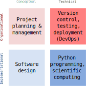

Lectures¶
Course structure¶
The course aims to give an overview of all topics and techniques relevant to writing high-quality scientific software. Conceptually, the topics covered in the course can be grouped as illustrated in the figure below.
{kind=link}
Part 1¶
Part 1 of the course covers the topics Project planning & management and Version control, testing and deployment. This first part aims lay the foundation for the organization of the students’ project work.
Part 2¶
The second part of the course focuses on the design and implementation of software with Python and thus covers the topics Software design and Python programming. It presents advanced programming and design concepts. It will accompany the first implementation sprint of the project work.
Part 3¶
The topic of the third part of the course is Scientific computing. It will try to address the challenges that students encounter during the project work.
Overview¶
The table below provides access to the slides from the course lectures in PDF format.
Date |
Topic |
Slides |
|---|---|---|
Part 1 |
||
2020-09-02 |
Python Basics |
|
2020-09-09 |
Project management, version control with git |
|
2020-09-16 |
Testing, packaging and deployment |
|
2020-09-23 |
Documentation and automation |
|
2020-09-30 |
1st Retrospective: Presentation of project plans, ssdp_lecture_5 |
|
Part 2 |
||
2020-10-07 |
Object oriented programming with Python, part 1 |
|
2020-10-14 |
Design patterns with Python |
ssdp_lecture_5 |
2020-10-21 |
The Python standard library |
ssdp_lecture_6 |
2020-10-28 |
Advanced Python concepts |
ssdp_lecture_7 |
2020-11-04 |
2nd Retrospective: Results from first sprint |
|
Part 3 |
||
2020-11-11 | High-performance computing with Python | ssdp_lecture_8 |
||
2020-11-18 |
Big data processing with Python |
ssdp_lecture_9 |
2020-11-25 |
Scientific visualization with Python |
ssdp_lecture_10 |
2020-12-02 |
3rd Retrospective: Results from second sprint |
|